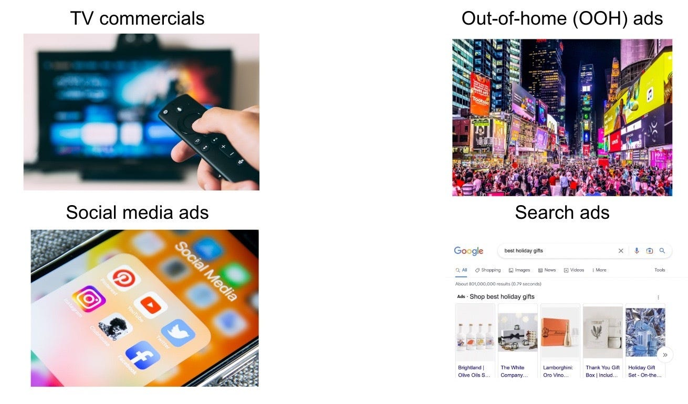
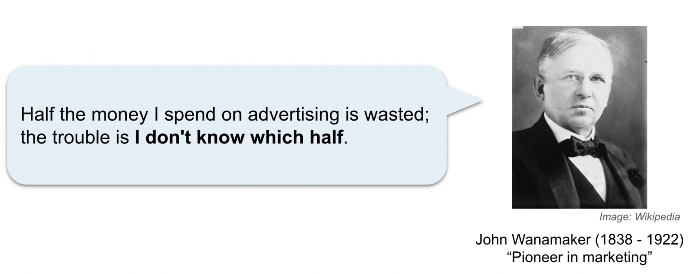
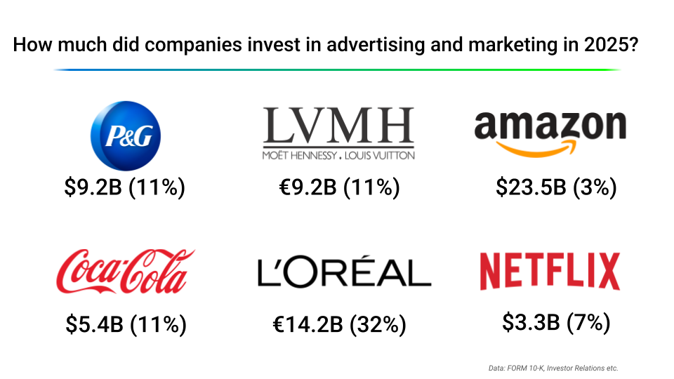

6.1 Le problème de la mesure des médias
À propos de la version française
Cette page est une traduction par IA de la version anglaise de Marketing Science in Python. La version anglaise fait foi et prévaut en cas de divergence. Le code, les notebooks et le texte intégré aux images restent en anglais. Lire la version anglaise
Quelle moitié est gaspillée ?
À quoi pensez-vous lorsque vous entendez le mot publicité ? À un spot télévisé pendant un grand match. Aux panneaux publicitaires de Times Square. Aux annonces intercalées entre les publications de vos amis sur les réseaux sociaux, et aux résultats sponsorisés qui s’affichent en tête de toutes vos recherches.

Du point de vue des données, ces canaux n’ont presque rien en commun. Une annonce sur un moteur de recherche produit un clic traçable ; un panneau publicitaire ne produit rien que l’on puisse enregistrer. Pourtant, une marque dispose d’un seul budget, et quelqu’un doit décider comment le répartir entre tous ces canaux.
Depuis plus d’un siècle, cette décision résiste à la mesure. John Wanamaker, pionnier du commerce de détail et de la publicité modernes, aurait trouvé la meilleure formule : « La moitié de l’argent que je dépense en publicité est gaspillée ; le problème, c’est que je ne sais pas quelle moitié. » Le secteur le cite encore parce que le constat fait toujours mal.

Les sommes en jeu n’ont fait qu’augmenter. Procter & Gamble a dépensé 9,2 milliards de $ en publicité au cours de l’exercice 2025, soit environ 11 % de son chiffre d’affaires. Amazon a dépensé 23,5 milliards de $. Et L’Oréal consacre environ 32 centimes de chaque euro de chiffre d’affaires à la publicité et à la promotion.

Avec de tels budgets, même une économie de 1 % ajoute directement des dizaines de millions de dollars au résultat net.
Peut-on réduire les dépenses TV de 20 % ?
Un directeur financier demande : « Nous avons dépensé des millions en télévision l’an dernier. Si nous réduisions ce budget de 20 %, les ventes changeraient-elles vraiment ? » Le tableau de bord affiche le ROAS (retour sur les dépenses publicitaires) pour chaque canal : le référencement payant semble performant, le reciblage est efficient, la télévision est faible. Mais personne dans la salle ne peut répondre avec assurance.
C’est parce que le tableau de bord répond à une autre question. Il peut montrer quels points de contact suivis ont précédé la conversion, mais il ne peut pas estimer le contrefactuel (ce qui se serait passé si la campagne TV n’avait pas été diffusée), quel que soit le modèle d’attribution utilisé. Or, c’est bien du contrefactuel qu’une décision budgétaire a besoin.
La télévision a peut-être créé une demande qui se manifeste ensuite par des recherches sur la marque. Si c’est le cas, réduire la télévision ne diminuerait pas seulement son impact mesuré : cela pourrait aussi réduire le volume que les moteurs de recherche captent par la suite.
L’attribution n’est pas une mauvaise réponse. Elle répond simplement à une autre question.
Le dispositif de mesure
La mesure marketing recouvre en réalité trois questions différentes, et chaque question dispose d’un outil conçu pour y répondre.
- Le MMM répond à la question : Comment répartir le budget entre les canaux ? Il suit un rythme de planification, mensuel ou trimestriel, et constitue l’outil adapté aux décisions budgétaires globales entre la télévision, les moteurs de recherche, les réseaux sociaux et les canaux hors ligne, qui ne partagent pas un même parcours de clics. Nous développons le MMM dans la section 6.2.
- L’attribution (attribution multipoint, MTA) répond à la question : Que s’est-il passé sur le parcours de conversion ? Elle fonctionne presque en temps réel, ce qui en fait l’outil adapté aux décisions tactiques fréquentes au sein d’un canal traçable : création publicitaire A ou B dans Google Ads, mot-clé ayant conduit à une conversion, audience ayant réagi.
- Les expériences (tests d’incrémentalité) répondent à la question : Cette activité marketing a-t-elle réellement causé des ventes supplémentaires ? Elles sont les plus lentes et les plus coûteuses des trois approches, et ce qui se rapproche le plus d’une vérité causale de référence dans ce dispositif, lorsque leur conception et leur exécution sont solides. La section 6.3 montre comment les concevoir et les analyser ; la section 6.4 utilise les éléments probants qu’elles apportent pour calibrer le MMM.
Une dernière remarque avant de passer à la construction : ces trois outils ne seront pas d’accord entre eux, et cela tient à leur conception. La section 6.5 est consacrée à la conduite à tenir lorsqu’ils divergent.